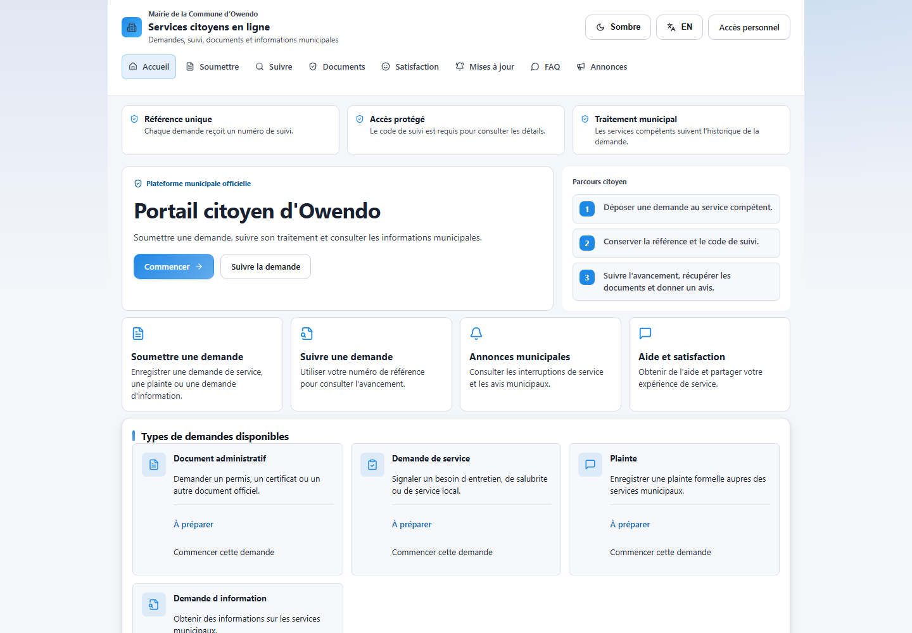

Portal interface · prototypeFinal-year project In progress
Owendo Municipal Workflow System
A web system for submitting municipal requests and following their progress. The current work includes a citizen portal and staff workflows.
React · Node.js / Express · PostgreSQL
View interface